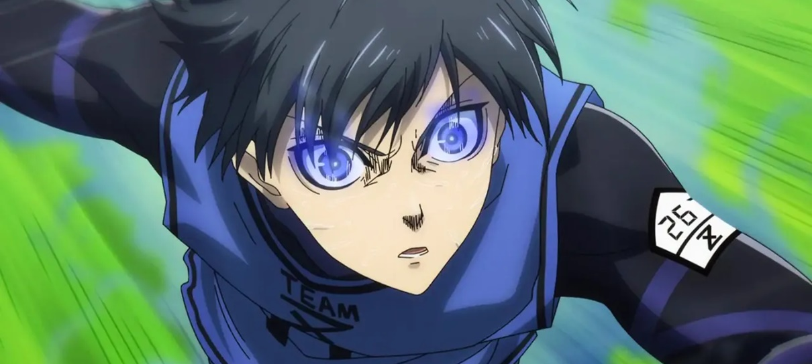

Blue Lock Live-action ganha pôster com Iemon
04/02/2026
Parece que a produção do live-action de Blue Lock está seguindo a estratégia de apresentar o elenco "peça por peça", e a bola da vez é o Okuhito Iemon.
Para quem acompanha a obra, o Iemon é aquele personagem que todo time precisa: o "faz-tudo" (ou "pau para toda obra") que acabou sacrificando seu próprio desejo de ser atacante para atuar como goleiro no Time Z, mantendo a harmonia do grupo.
O que o pôster revela
Fidelidade Visual: Seguindo o padrão dos cartazes anteriores (como os de Isagi e Bachira), o visual do Iemon foca bastante no realismo do uniforme da seleção do Blue Lock, mantendo o cabelo característico, mas com uma pegada menos "caricata" e mais atlética.
Estética Realista: A fotografia do pôster mantém aquele tom cinzento e industrial das instalações do Blue Lock, o que indica que o filme terá uma pegada mais séria e física, fugindo um pouco do brilho excessivo de alguns live-actions de esporte.
O "Coração" do Time Z: O marketing parece querer dar destaque aos jogadores que formaram a base emocional do início da história, reforçando que o filme deve cobrir detalhadamente o arco da Primeira Seleção.
O desafio do Live-Action
Adaptar Blue Lock é um desafio técnico imenso. Enquanto animes de esporte comuns focam na amizade, aqui o foco é o egocentrismo e movimentos quase sobre-humanos.
As "Auras": Aqueles efeitos visuais que representam o despertar dos jogadores.
A Velocidade: Como filmar as jogadas para que não pareçam lentas demais em comparação ao ritmo frenético do mangá.